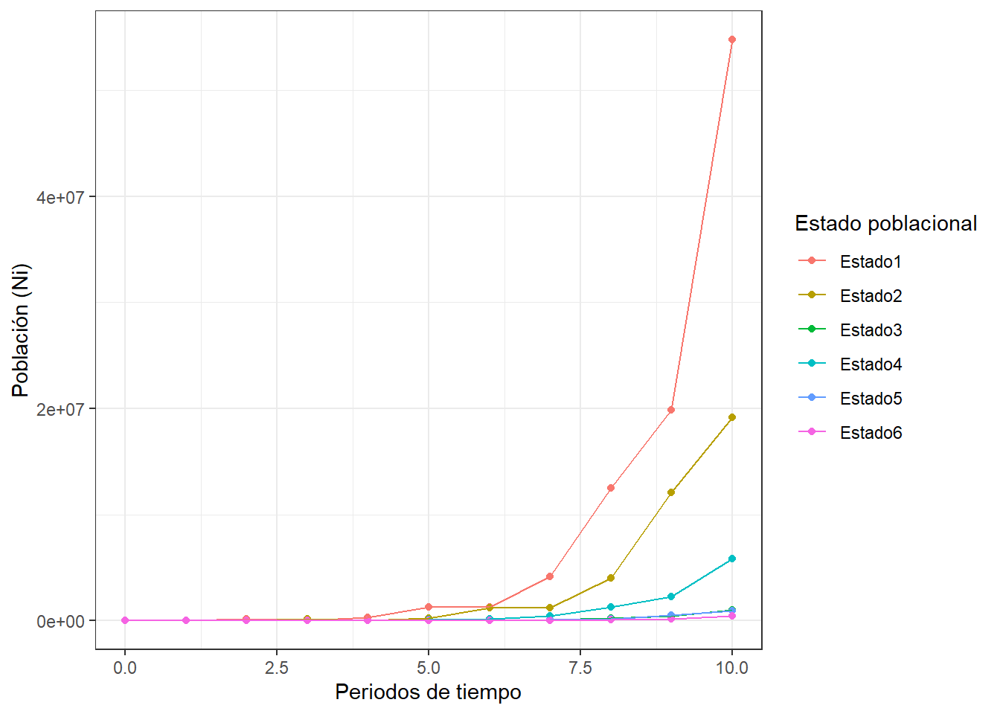
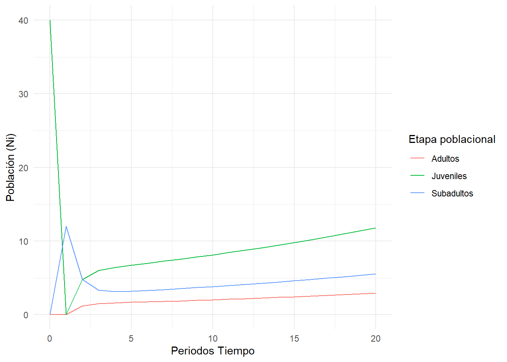

# 1. Librerías requeridas
library(tidyverse)
library(ggplot2)Taller 6. Visualización de Poblaciones
Datos de …
1. Ejemplo práctico de modelación matricial de poblaciones.
Ejercicio modificado de NRES 470/670. Para este caso se realizará el ejercicio de Caswell (1989) con una población de la planta invasora Dipsacus sylvestris, nativa de Europa.

Esta es una población que presenta particularidades en su dinámica de crecimiento poblacional, dado a que presenta mecanismos de reproducción sexual y asesual, así como casos en los que se presentan reversiones.

Requerimientos
1.) Cargar Matriz de proyección de la población de cardos (D. sylvestris).
2.) Construir el ventor de proyección inicial de la población (No)
3.) Generar una figura en ggplot2 con la proyección de la población en 10 periodos de tiempo.
Respuesta al ejercicio 1.
Paso 1 Cargar las librerías requeridas
Paso 2 Cargar la base de datos teaselmatrix1.csv
# 2. Cargar la base de datos
matriz_estado <- read.csv("teaselmatrix1.csv", row.names = 1)
Estado_nombres <- c("seed1","seed2","ros1","ros2","ros3","flowering")
rownames(matriz_estado) <- Estado_nombres
colnames(matriz_estado) <- Estado_nombres
matriz_estado seed1 seed2 ros1 ros2 ros3 flowering
seed1 0.000 0.00 0.000 0.000 0.000 322.380
seed2 0.966 0.00 0.000 0.000 0.000 0.000
ros1 0.013 0.01 0.125 0.000 0.000 3.448
ros2 0.007 0.00 0.125 0.238 0.000 30.170
ros3 0.008 0.00 0.000 0.245 0.167 0.862
flowering 0.000 0.00 0.000 0.023 0.750 0.000Paso 3 Vector de estado inicial (No) y tiempo a proyectar (periodos_t)
# población inicial
No <- matrix(c(1000,1500,200,300,600,25),ncol=1)
rownames(No) <- rownames(matriz_estado)
colnames(No) <- "Abundancia"
No Abundancia
seed1 1000
seed2 1500
ros1 200
ros2 300
ros3 600
flowering 25# número de períodos a proyectar en el modelo
periodos_t <- 10Paso 4 Función modelo_pob, para simular la densidad de la población No en los 6 estados de desarrollo
modelo_pob <- function(P, No, periodos_t) {
# inicializar una matriz vacía para almacenar los datos
m.vacia <- matrix(nrow = periodos_t + 1, ncol = length(No))
# establecer la población inicial
m.vacia[1,] <- No
# iterar sobre cada período y actualizar la población
for (i in 1:periodos_t) {
# multiplicar la matriz de transición por la población actual
N <- P %*% m.vacia[i,]
# almacenar los datos para este período
m.vacia[i + 1,] <- N
}
# convertir la matriz de datos en un marco de datos y añadir nombres a las columnas
data.frame(m.vacia) %>%
set_names(paste0("Estado", 1:length(No)))
}Paso 5 Grafica de la simulación de la población
# simular la población
simulación <- modelo_pob(as.matrix(matriz_estado), No, periodos_t)
# crear una columna de tiempo
simulación <- simulación %>%
mutate(Tiempo = 1:(nrow(simulación)) - 1)
# convertir el marco de datos a formato largo
simulación_largo <- simulación %>%
pivot_longer(cols = -Tiempo, names_to = "Estado", values_to = "Abundancia")
# crear el gráfico
ggplot(simulación_largo, aes(x = Tiempo, y = Abundancia, color = Estado)) +
geom_point() +
geom_line() +
labs(x = "Periodos de tiempo", y = "Población (Ni)", color = "Estado poblacional")+
theme_bw()
2. Ejemplo práctico de modelación matricial de poblaciones.
Ejercicio modificado de NRES 470/670. Para este caso se realizará el ejercicio de Caswell (1989) con una población de la planta invasora Dipsacus sylvestris, nativa de Europa.
library(tidyverse)Paso 1 Construir una matriz cudrada de transición en blanco TMat y un vectos de abundancias iniciales No con 40 individuos en el estado juvenil.
# Definir la matriz de transición en blanco "TMat"
TMat <- matrix(0, nrow = 3, ncol = 3)
Estado_nombres <- c("Juveniles", "Subadultos", "Adultos")
rownames(TMat) <- Estado_nombres
colnames(TMat) <- Estado_nombres
TMat[1,1] <- 0
TMat[2,1] <- 0.3
TMat[3,3] <- 1 - 0.15
TMat[2,2] <- 0.5 - 0.1
TMat[3,2] <- 0.1
TMat[1,2] <- 0.1 * 4
TMat[1,3] <- 0.85 * 4
TMat[,1] <- c(0, 0.3, 0)
TMat[,2] <- c(0.1 * 4, 0.4, 0.1)
TMat[,3] <- c(0.85 * 4, 0, 0.85)
# Definir el vector de abundancia inicial No
No <- c(40, 0, 0)
names(No) <- colnames(TMat)
TMat Juveniles Subadultos Adultos
Juveniles 0.0 0.4 3.40
Subadultos 0.3 0.4 0.00
Adultos 0.0 0.1 0.85Paso 2 A continuación se realiza la simulación multi-estado a traves de 20 intervalos de tiempo periodos_t,
# Periodos de tiempo a simular
periodos_t <- 20
# matriz vacía para almacenar los datos "Tiempo, Juveniles, Subadultos y Adultos"
datos_pob <- data.frame(matrix(NA, nrow = periodos_t + 1, ncol = 4))
colnames(datos_pob) <- c("Tiempo", Estado_nombres)
# establecer la población inicial (No)
datos_pob[1, 1] <- 0
datos_pob[1, 2:4] <- No
# iterar sobre cada período y actualizar la población
for(i in 1:periodos_t) {
if(i == 1) {
P <- TMat
} else {
P <- TMat %*% P
}
datos_pob[i + 1, 1] <- i
datos_pob[i + 1, 2:4] <- P %*% No
}Paso 3 Grafica de la simulación de la población
# convertir el marco de datos a formato largo
datos_pob_long <- datos_pob %>%
pivot_longer(cols = -Tiempo, names_to = "Estado", values_to = "Abundancia")
# Gráfico de la dinámica poblacional
ggplot(datos_pob_long, aes(x = Tiempo, y = Abundancia, color = Estado)) +
geom_line() +
labs(x = "Periodos Tiempo", y = "Población (Ni)", color = "Etapa poblacional") +
theme_minimal()